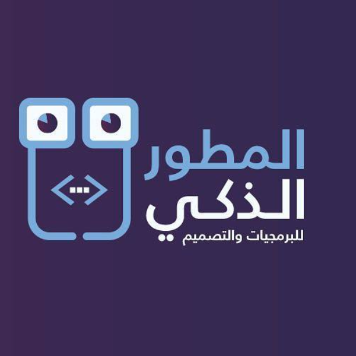

I'm a software engineer specialised in developing (and occasionally designing)
exceptional, high-quality mobile applications and websites
=> "Muscat,Oman"
> Ahid.education
=> "University of Waikato,New Zealand"
> Ahid.major
=> "Software Engineering"
> Ahid.areasOfExpertise
=> ["Programming", "UI/UX", "Big Dta", "Cyber Security, "Testing", "Data Analysis", "Project Management"]
> Ahid.programmingLanguages
=> ["Jave", "C#", "C++", "HTML", "CSS", "JS","SQL"]
> Ahid.design
=> ["Sketch", "inVision,"inDesign","Photoshop"]
> Ahid.interest
=> ["Proofreading", "Translation", "Math","Hiking"]
> Ahid.workExperience.latest
=> Latest Work Experience
company: "Smart Developer"
role: "UI/UX Designer"
startDate: "August 2018"
> Ahid.email
=> "ahad.94@hotmail.com"
Résumé
Education
University of Waikato
2013 - 2017
Bachelor of Engineering with Honours
Hamilton,New Zealand
Relevant Coursework:
- Object-Oriented Programming
- Engineering and Society
- Foundations of Engineering
- Computer Systems
- Practical Networking and Cyber Security
- Software Engineering Process
- Design and Analysis of Algorithms
- Human-Computer Interaction
- Mobile Application Development
- Usability Engineering
- Operating Systems
- Database Practice and Experience
- Advanced Web Technologies
- Engineering Self-Adaptive Systems
- Honours Research and Development Project
Work Experience
Smart Developer
August 2018 - Current
UI/UX Designer
Muscat, Oman
Joined a team to
design, prototype, build softwares. Worked as both a designer and developer on a variety of internal and client projects.
Android DevelopmentSketch
Bank Muscat
December 2016 - February 2017
Hadoop Analyst
Muscat, Oman
In order to offload data from operational data stores to the big data system and reconcile frontend systems with backend systems to Hadoop ecosystem. My responsibility was to design and develop Hadoop installation and Tuning.
HadoopHIVEMapReducePIGShell
Mea Mobile
July 2016 - October 2016
Android Developer
Hamilton, New Zealand
Worked on The ArtworkVisualizer platform which adopts innovative augmented reality technology to allow potential art buyers to virtually hang artworks on their walls before purchase. Artworks are auto-scaled to fit the user’s home environment; eliminating the need for Gallery staff and Artists to spend unnecessary time creating mock-ups in Photoshop.
AndroidGitinDesigninVesion
Omantel
December 2015 - February 2016
Software Engineering Intern
Muscat, Oman
Gained valuable technical experience and also developed personal effectiveness within a corporate environment.
HTMLCSSJSSQL
Work + Fun
{kind=link}
Citizens Reporter A mobile application that encourage victims and witnesses to report crimes without using current approaches in New Zealand. This software will enable the police to obtain accurate information about the crime promptly and get the photos, videos and audio notes along with a textual description and the location of the crime, therefore taking immediate action for such situations will become smoother and quicker.
{kind=link}
Celebrity News Mobile application that allows funs to read the latest gossip of their favorite celebs
{kind=link}
Getfix Mobile application that allows service seekers to book their home maintenance services.
{kind=link}
HR Care An internal summer intern project at Omantel. The android application has been created to help HR to contact with the employees easily. Moreover, by using this system the employees will be able to send complains, inquiries or any problems to the HR in order to be solved or assigned to concerned team within the HR. by team.
{kind=link}
iTrans iTrans for business iTrans makes the process of sending and receiving packages and shipments to the clients and customers much simpler, easier and more fun.With just a few clicks, a business owner can have packages sent to and from anywhere in Oman. I worked as a UI/UX designer in this project.
Beyadi Aqraa A program for preparing the scientific material for blind students at Sultan Qaboos University. I worked as a UI/UX designer in this project.
{kind=link}
Be Volunteer A portal for volunteers to connect with the nonprofits, and in a way, it's a own search engine specifically for volunteer opportunities.